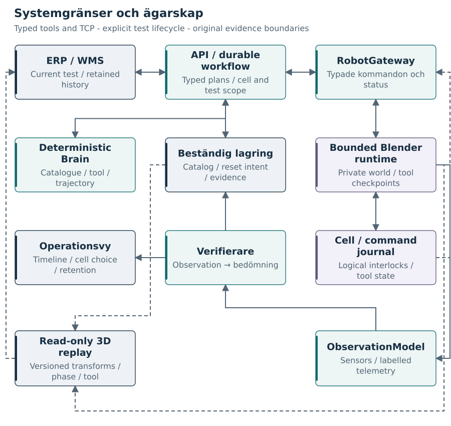

Från kundorder till verifierad roboteffekt
Vetenskaplig designstudie för RobotOps Twin
AI-assisterad text- och publiceringsframställning.
Ej sakkunniggranskad. Inte framtagen av eller godkänd av SICS AI.
Rapporternas källor, diagram och byggskript finns i projektets repository.
Sammanfattning
RobotOps Twin är en föreslagen, lokal integrationssimulator för lagerrobotik. Ett förenklat ERP/WMS skapar plockuppdrag. Ett Pythonbaserat integrationslager validerar och lagrar uppdragen, hämtar observationer, begär ett handlingsförslag och skickar typade kommandon till en simulerad robotcell i Blender. En separat verifierare bedömer utfallet innan kundsystemet uppdateras. Den centrala frågan är inte hur en robotarm animeras, utan hur mjukvaran hanterar skillnaden mellan en begärd handling, en kvitterad operation och ett observerat resultat.
Studien kombinerar en riktad genomgång av offentliga primärkällor med ett eget arkitekturförslag och en förhandsdefinierad utvärderingsplan. Underlaget omfattar SICS AI:s rollbeskrivning och HYPER-redovisning, Cognibotics produktionsbeskrivning, CloudGripper/AutoGrasper, R900 samt officiell dokumentation för Blender, OpenAI och integrationsprotokoll. Källorna har olika bevisvärde och hålls därför isär.
Resultatet i denna version är en dokumenterad design, inte en implementerad eller experimentellt validerad robotlösning. Inga prestandasiffror för projektet, säkerhetsgarantier eller resultat om generell intelligens hävdas. Det planerade bidraget är ett litet, reproducerbart testsystem där fel efter en fysiskliknande sidoeffekt kan studeras utan verklig robotutrustning.
Nyckelord: systemintegration, lagerrobotik, Blender, verifiering, idempotens, återhämtning, observerbarhet, digital-tvilling-inspirerad simulering.
1. Syfte, frågeställningar och läsanvisning
Projektet ska visa hur ett kunduppdrag kan följas genom flera system med olika ansvar och olika uppfattningar om vad som har inträffat. Den avsedda användningen är teknisk diskussion, intervjuförberedelse och ett senare portfolioprojekt. Det är inte en beställning från SICS AI och inte dokumentation av företagets interna implementation.
Tre frågor styr designen:
F1. Hur kan ett litet system hålla isär affärsuppdrag, modellförslag, robotkommandon och verifierade effekter?
F2. Hur kan systemet återhämta sig när kommunikationen försvinner efter att ett objekt redan har flyttats, utan ett omotiverat nytt plock?
F3. Vilka relevanta integrationsproblem kan demonstreras i Blender, och vilka slutsatser kräver fysisk utrustning eller tillgång till den verkliga plattformen?
Rapport 1 beskriver forskningsunderlag, arkitektur och testplan. Rapport 2 granskar överförbarheten till en verklig robotmiljö. Rapport 3 är ett samtalsunderlag för diskussion med Axel Kaliff och Per-Eric Olsson. Den som vill förstå huvudidén först kan läsa figur 1, avsnitt 7 och slutsatsen. Kontrakt och utvärderingsprotokoll är till för den tekniska fördjupningen.
1.1 Vad ordet ”Twin” betyder här
Projektets namn är RobotOps Twin. I denna studie används dock den mer precisa beskrivningen digital-tvilling-inspirerad integrationssimulator. Det finns ännu ingen ansluten fysisk tillgång som modellen hålls synkroniserad med. En synlig Blender-scen är därför inte i sig en verifierad digital tvilling av Nowastes anläggning.
Vi definierar en effekt som en förändring i simulatorns auktoritativa världstillstånd, exempelvis att objekt O17 flyttas från källåda A till orderlåda B. Att en animation har spelats upp är inte en tillräcklig effektdefinition. Testerna måste kunna inspektera den lagrade världen och effektjournalen.

2. Metod och källkritik
2.1 Undersökningens karaktär
Detta är en riktad litteratur- och dokumentstudie med konstruktivt designförslag. Det är inte en uttömmande systematisk översikt. Urvalet utgår från den aktuella rollen, de namngivna forskarna och de produkter som förekommer i offentliga integrationsbeskrivningar. Sökningen har kompletterats med officiell teknisk dokumentation för föreslagna verktyg.
Kontrolldatum är 1 oktober 2026. Referensregistret anger organisation eller författare, titel, datum när det är känt, URL och begränsning. Källor utan säkert publiceringsdatum markeras utan datum. En relativ LinkedIn-tidsstämpel omvandlas inte till ett gissat publiceringsdatum.
Arbetsgången var att identifiera relevanta påståenden, kontrollera deras ursprung, härleda ett integrationsbehov och formulera ett eget designbeslut. Författarens beslut redovisas som förslag, inte som fynd om SICS AI. Tidigare research har behandlats som ett sökunderlag och inte som en oberoende källa.
2.2 Fyra evidenskategorier
| Kategori | Betydelse i rapportpaketet | Exempel |
|---|---|---|
| Dokumenterat | En identifierbar källa innehåller den beskrivna uppgiften. | En rollannons nämner Pythonintegration. |
| Självrapporterat | Företaget eller projektgruppen beskriver egna egenskaper eller resultat. | HYPER-redovisning och leverantörspress. |
| Eget designförslag | Ett val för RobotOps Twin, härlett men inte kopierat från källorna. | SQLite, kommandokontrakt och testfall. |
| Ej verifierat | Underlag saknas, är otillgängligt eller otillräckligt för slutsatsen. | SICS interna API, säkerhetsarkitektur och modellkod. |
En EU-webbplats kan verifiera att ett projekt och en rapport finns. Det gör inte automatiskt deltagarens tekniska resultat oberoende reproducerade. En tillverkares högsta uppgivna plockhastighet ska inte tolkas som mätt genomströmning hos en viss kund.
Axels examensarbete används med särskild försiktighet: titel och bibliografiskt sammanhang identifierades i föregående research, men fulltexten kunde inte återhämtas i denna publiceringskontroll. Därför återges inga detaljerade metod- eller resultatpåståenden från examensarbetet. Kopplingen till verifiering används som ett avgränsat diskussionstema. [S04]
2.3 Publiceringsetik och reproducerbarhet
Alla figurer och arkitekturkontrakt i paketet är egna illustrationer. Inga företagslogotyper, privata e-postmeddelanden eller interna dokument återpubliceras. Referenserna är inspiration och belägg för avgränsade påståenden, inte ett påstående om samarbete eller godkännande.
Text, disposition och publiceringskod har tagits fram med AI-assistans. Projektägaren ansvarar för att läsa och förstå materialet före användning. Rapportpaketet är inte sakkunniggranskat. Källfiler, diagramdefinitioner och byggskript publiceras så att text och figurer går att rätta och regenerera.
3. Vad de offentliga källorna faktiskt visar
3.1 Rollen: integrationsansvar snarare än enbart modellutveckling
Den granskade Systemingenjör-annonsen kopplar rollen till Python, robotceller och kundernas API:er, PLC:er och WMS/ERP. Den omfattar också LLM/VLM-integration, driftsättning, felsökning, dokumentation och teknisk kunddialog. Industriella protokoll anges som meriterande. Annonsen är ett kravunderlag, inte en fullständig lista över den interna teknikstacken. [S01]
En närliggande annonsversion formulerar erfarenhetskraven annorlunda. Projektet ska därför inte användas för att hävda att alla formella anställningskrav är uppfyllda. Det demonstrerar valda arbetsuppgifter; det ersätter inte yrkeserfarenhet, examen eller ansvar för verkliga leveranser. [S02]
3.2 SICS AI:s HYPER-beskrivning
HYPER är registrerat hos CORDIS med projekt-ID 101218436. I deltagarrapporteringen beskriver SICS AI en strukturerad världsmodell och feedbackbaserat lärande samt anger att kärnan inte är en LLM och inte använder reinforcement learning. Rapporten beskriver också robotgränssnitt med kontroll på led- och rörelsenivå. Detta är bolagets redovisning; underlaget räcker inte för att rekonstruera algoritmen. [S03]
För projektet följer ett designkrav: AI-funktionen ska vara en utbytbar komponent med ett uttryckligt in- och utkontrakt. Den ska inte ersättas med en fri textprompt som samtidigt får obegränsad rätt att ändra simulatorn.
3.3 Produktionsbeskrivningen från Cognibotics
Cognibotics beskriver den 5 januari 2026 en andra robotcell för Nowaste med AutoStore, SICS AI:s vision och integration mot lagerstyrningen. Juliet & Romeo tillskrivs realtidsrörelse, gripning och överlämning till transportband. Det är en leverantörsbeskrivning av en konkret installation, inte en publicerad intern gränssnittsspecifikation. [S07]
Tillverkaren beskriver HKM1800 som hybridkinematisk. RobotOps Twin ska därför inte märka en generisk sexaxlig Blender-arm som en mekaniskt korrekt HKM1800. Robotens utseende används för förståelse av flödet, inte för att härleda dess faktiska arbetsområde eller cykeltid. [S08]
HYPER- och produktionsbeskrivningarna behöver inte motsäga varandra. De kan avse olika nivåer, versioner eller tillämpningar. Vårt svar är att skilja mellan uppgiftsnivå och rörelsenivå i designen och be SICS förklara den verkliga ansvarsfördelningen. Två fullständiga styrimplementationer behövs inte i första versionen.
3.4 Axel Kaliff, AutoGrasper och R900
CloudGripper/AutoGrasper beskriver ett arbetsflöde där uppgift, återställning, felåterhämtning och datainsamling har separata roller. README-filen anger tillstånden STARTUP, ACTIVE och RESETTING och namnger metoder för normal uppgift respektive återhämtning. Det granskade README-objektets Git-blob är 3cb1da256bc5147ef52a56327da476f110c4e6c2. Det är forskningsverktyg, inte SICS produktkod. [S05]
R900, med Axel Kaliff som medförfattare, undersöker kostnadseffektiviteten hos autonom datainsamling för robotinlärning. Den granskade arXiv-posten har en reviderad version från 17 september 2025. Studiens automatisering av försök, märkning och återställning motiverar att också vår simulator gör episoder och återhämtning till förstklassiga begrepp. Vi reproducerar inte dess dataset eller modellresultat. [S06]
Axels examensarbetstitel anknyter till verifiering av robotaktioner med en digital tvilling. Denna tematiska koppling är relevant, men innebär inte att en efterhandskontroll av objektposition i Blender reproducerar hans forskningsmetod. [S04]
3.5 GPU-resurser och deras roll
ENCCS redovisar arbete med Python/PyTorch och GPU-träning på LUMI. Aixia har offentliggjort en leverans av DGX B200 med drifttjänster till SICS AI. Dessa källor ger stöd för verkligt beräkningsarbete, men fastställer inte var varje kunds inferens körs eller vilket GPU-ansvar den aktuella rollen får. [S10][S11]
Simulatorn behöver ingen B200. Den ska i stället kunna beskriva modellversion, inferensgränssnitt, latens och felutfall. En eventuell framtida GPU-adapter ändrar inte vem som äger ordern eller vem som verifierar ett plock.
3.6 Från inspiration till eget beslut
| Källa | Avgränsat fynd | Eget designbeslut | Inte en reproduktion av |
|---|---|---|---|
| Rollannons [S01] | Integration mellan flera system. | Separata kund-, modell- och robotkontrakt. | Företagets exakta stack. |
| HYPER [S03] | Världsrepresentation och robotgränssnitt. | Ett typat Brain-gränssnitt. | Proprietär modell eller AGI. |
| AutoGrasper [S05] | Uppgift, reset och recovery skiljs åt. | Episodmodell och explicita felvägar. | Deras implementation eller data. |
| R900 [S06] | Automatiserade robotförsök. | Reproducerbara scenarier och loggning. | Studiens resultat. |
| Cognibotics [S07] | Motion, vision och lagerstyrning samverkar. | Separat cell- och robotadapter. | Den installerade cellens interna API. |
| Blender [S12][S13][S14] | Scen-API, timers och MCP-verktyg. | Kontrollerad runtime, separat scenförfattande. | Industriell realtidsstyrning. |
| AWS [S17] | Återförsök kräver tydlig identitet och semantik. | Beständig avsikt och avstämning av okänt utfall. | En allmän exactly-once-garanti. |
4. Krav och minsta meningsfulla omfattning
4.1 Ett litet system med verkliga ansvarsskillnader
Första versionen ska ha en kund, en robotcell, tre syntetiska artikeltyper och ett aktivt plock åt gången. En orderrad omfattar ett exemplar; större kvantiteter delas senare upp i spårbara deluppdrag. Källåda, destinationslåda och produktidentiteter är explicit modellerade.
Systemet ska kunna köras utan externa modellkonton. Blender visar förändringen i världen, men ordern blir inte färdig bara för att animationen slutar. UI:t visar orderstatus, cellstatus, kommandostatus och verifieringsstatus var för sig.
4.2 Kravspårbarhet mot rollen
| ID | Arbetsområde | Planerad projektartefakt | Vad som kan bedömas |
|---|---|---|---|
| K01 | Pythonutveckling | Modulärt backend och typade modeller. | Kodstruktur, felhantering och tester. |
| K02 | Kund-API/WMS | Mock-ERP och adapter med kvittenser. | Kontrakt och affärssemantik. |
| K03 | Robotintegration | RobotGateway med Blender-adapter. | Ansvarsgräns och versionshantering. |
| K04 | PLC/cellsignaler | Logisk CellController. | Interlocks och tillstånd, inte PLC-certifiering. |
| K05 | LLM/VLM | Valfri adapter för strukturerade förslag. | Validering, tidsgränser och avvisning. |
| K06 | Driftsättning | Lokal installationsguide och versionsmanifest. | Repeterbar start och konfiguration. |
| K07 | Drift/felsökning | Händelsetidslinje och felinjektion. | Spårbarhet och diagnos. |
| K08 | Tillförlitlighet | Journal, dubblettskydd och reconciliation. | Modellens definierade felantaganden. |
| K09 | Prestanda | Mätning per steg och kötid. | Flaskhalsanalys, inte industriell kapacitet. |
| K10 | Dokumentation/kunddialog | Tre rapporter, kontrakt och demonstrationsmanus. | Förmåga att förklara beslut. |
| K11 | Industriella protokoll | OPC UA-adapter som tillägg med kontraktstest. | Protokollintegration först när den är implementerad. |
| K12 | AI-stödd utveckling | Versionshanterade ändringar och granskade tester. | Eget ansvar för agentgenererad kod. |
K01–K10 är förberedelsemål, inte genomförda leveranser i denna rapportversion. K11 får inte markeras färdigt för att booleska signaler finns i JSON. Annonsens kärnuppgifter och meriterande områden är utgångspunkt för kartläggningen. [S01][S02]
5. Föreslagen systemarkitektur
5.1 Komponenter och ägarskap
Arkitekturen är en liten modulär tjänst med separata externa gränser, inte ett stort kluster av mikrotjänster. Ett separat mock-kundsystem och en separat Blenderprocess gör kommunikationsfel möjliga att studera. Modell, verifierare och cellkontroll kan inledningsvis vara moduler i samma Pythonapplikation.


| Del | Äger | Får inte göra |
|---|---|---|
| Mock ERP/WMS | Order, artikelregister och kundens kvittens. | Skriva robotleder eller modellens interna tillstånd. |
| Integrationslager | Uppdrag, avsikt, försök och rapportering. | Tolka timeout som bevis för utebliven effekt. |
| Brain-adapter | Ett handlingsförslag och modellmetadata. | Exekvera kod i Blender eller godkänna sig själv. |
| Validator | Kontrakt, aktualitet och operationella gränser. | Påstå att logiska kontroller är funktionell säkerhet. |
| CellController | Simulerad tillgänglighet, stopp och signaler. | Återstarta rörelse automatiskt efter reset. |
| RobotGateway | Kommandostatus och adapterförmågor. | Dölja skillnader mellan stödda och ostödda kommandon. |
| Blender-runtime | Simulatorns värld och effektjournal. | Låta UI eller modell manipulera världen direkt. |
| Verifierare | Bedömning baserad på observationer. | Anta att sänd kvittens innebär lyckad uppgift. |
| Test-orakel | Jämförelse med fullständigt simulatortillstånd. | Ge den ordinarie beslutsvägen obegränsad facitåtkomst. |
5.2 Två arkitekturnivåer, en första implementation
Det logiska gränssnittet kan uttrycka både PickIntent och JointTrajectory, men första implementationen ska endast utföra en avgränsad PICK_AND_PLACE-uppgift via fördefinierade, validerade rörelsesegment. En kapabilitetsförfrågan anger vad adaptern faktiskt stöder. En ostödd ledtrajektoria ger ett tydligt fel, inte en approximativ animation som låtsas vara motsvarande styrning.
Senare kan en lednivåadapter införas med lednamn, tidsatta waypoints och explicit robotmodell. Det är ett separat integrationsarbete med egna tester. Gemensamt affärskontrakt kan minska ändringar i ERP-delen, men gör inte ett hårdvarubyte plug-and-play.
5.3 Driftmiljö
Den avsedda körningen är lokal: webbläsare, Pythonprocesser, SQLite och Blender. Kundmocken bör ha en separat databas eller åtminstone ett separat lagringskontrakt så att kundkvittens inte blir en dold lokal transaktion. Ett processövervakningsskript kan starta komponenterna. Containerisering av backend är valfri; Blender kan köras direkt på värddatorn.
GitHub Pages används endast för rapporter, diagram och nedladdningar. Pages kör inte Pythonbackend eller Blender. En framtida inspelad demo ska märkas inspelad och inte presenteras som levande robottelemetri. [S19]
6. Datakontrakt och tillstånd
6.1 Identiteter som inte får blandas ihop
order_id identifierar kundens order. job_id identifierar den affärseffekt som efterfrågas. command_id identifierar ett specifikt exekveringsförsök. event_id används för mottagardubbletter. scene_epoch identifierar en sammanhängande simulatorvärld och ändras vid återställning av scenen. En scenåterställning får inte radera tidigare orderhistorik eller få gamla kommandon att bli giltiga igen.
Återleverans av samma orderbegäran använder samma idempotensnyckel. Samma nyckel med annat innehåll avvisas som konflikt. Ett nytt försök efter ett verkligt misslyckande får egen försöksidentitet men behåller kopplingen till samma uppdrag. Skillnaden mellan begäran och avsikt är central i designen. [S17]
6.2 Föreslaget kommando
Nedanstående JSON är ett designexempel, inte SICS AI:s API:
{
"schema_version": "1.0",
"command_id": "CMD-017-A1",
"job_id": "JOB-017",
"scene_epoch": "SCENE-004",
"kind": "PICK_AND_PLACE",
"object_id": "OBJ-RED-01",
"source_id": "SOURCE-A",
"destination_id": "ORDER-TOTE-17",
"observation_id": "OBS-104",
"calibration_version": "CAL-001",
"frame_id": "cell_world",
"target_pose": {
"position_m": [0.42, -0.18, 0.12],
"quaternion_xyzw": [0.0, 0.0, 0.0, 1.0]
},
"planner_version": "deterministic-1"
}
Valideringen kontrollerar bland annat tillåten kommandotyp, ändliga tal, rätt koordinatsystem, korrekt objekt, rimliga gränser, kompatibel kalibrering och tillräckligt aktuell observation. Kvaternionen kontrolleras mot en dokumenterad normtolerans. Toleranserna är egna simulatorparametrar och får inte kallas industriellt säkra.
6.3 Föreslagna API-gränser
| Gräns | Exempel | Semantik |
|---|---|---|
| Kund till integration | POST /v1/pick-jobs |
Skapa eller återfå samma uppdrag via idempotensnyckel. |
| Uppföljning | GET /v1/jobs/{job_id} |
Affärsstatus och länkar till försök/evidens. |
| Modell | POST /v1/plans |
Förslag, inte exekvering. |
| Robot | POST /v1/commands |
Accepterad betyder inte utförd. |
| Robotstatus | GET /v1/commands/{command_id} |
Journalens status inom angiven scene_epoch. |
| Observation | GET /v1/cells/{cell_id}/observation |
Tidsatt observation med sensorursprung. |
| Kundkvittens | POST /v1/order-events |
Dubblettskyddad uppdatering av orderrad. |
| Felscenarier | POST /test/faults |
Endast lokal testmiljö; inte produktionsgränssnitt. |
API-kontrakten ska dokumentera timeout, felkod, tidsstämpel, behörighet och vilka fält som ingår i innehållshashen. Felkod 404 från robotjournalen bevisar inte i sig att kommandot aldrig kördes: journalens beständighet, epok och retention måste också vara kända.
6.4 Uppdragstillstånd och celltillstånd
Uppdraget beskriver vad affärsflödet vet. Celltillståndet beskriver om simulatorn kan fortsätta köra. Dessa är separata tillståndsmaskiner. En robot kan ha avslutat en rörelse medan uppdraget fortfarande har okänt utfall.

Normalvägen är mottaget, validerat, kölagt, planerat, skickas, utförs, verifieras, verifierat och kundsynk väntar. COMPLETED tillåts först när kundsystemets kvittens är hanterad. Om endast kundsynk misslyckas ska roboten inte plocka igen.
UNKNOWN_OUTCOME betyder att underlaget inte räcker. Reconciliation är avstämning, inte ännu ett robotkommando. Om bevisen fortfarande är otillräckliga går ärendet till MANUAL_REVIEW eller kvarstår som oavgjort. Det får inte automatiskt bli FAILED enbart för att en tidsgräns passerat.
Cellen kan vara BOOTING, READY, RUNNING, FAULTED, STOPPED eller RESETTING. Ett återställt stopp återställer inte automatiskt planens giltighet. En ny observation och ny tillåtelse behövs innan en avbruten uppgift återupptas.
7. Kärnfallet: utfört plock, förlorad kvittens
7.1 Varför ett återförsök kan vara fel
Anta att robotadaptern flyttar ett objekt, men att nätverket bryts innan integrationstjänsten får svaret. Klienten ser bara en timeout. Två förlopp är då förenliga med samma observation: ingenting utfördes, eller allt utfördes men svaret försvann. Utan mer information går det inte att välja ett säkert nytt plock enbart utifrån timeouten.

Den föreslagna lösningen kombinerar beständig avsikt, kommandoregister och observation efter handling. Den utlovar inte en universell exactly-once-egenskap. Ett databaslås och en robotrörelse är inte en gemensam atomär transaktion.
7.2 Föreslaget återhämtningsförlopp
Integrationslagret lagrar avsikten före sändning. Blender-adaptern lagrar kommandots ID och innehållshash före effekt. När kvittensen uteblir markeras uppdraget som osäkert. Integrationen frågar efter samma kommando och begär en färsk observation. Om journal, epok och observerat objektläge ger tillräckligt stöd kan verifieringen fortsätta utan ett nytt plock.
Om journalen säger slutfört men objektet inte kan lokaliseras är det en konflikt som kräver utredning, inte tillåtelse att välja den mest bekväma uppgiften. Om journalen gått förlorad och bilden är skymd kan korrekt beteende vara att stoppa automatiseringen och visa osäkerheten.
7.3 Omstarter och delvis genomförda handlingar
En omstart av integrationstjänsten får inte nollställa robotens värld. Den återläser uppdrag och utgående meddelanden från beständig lagring. Vid avbrott under sändning gör den avstämning innan nya rörelseförslag tillåts.
En omstart av Blender är svårare. Scenens senaste sparade fil kan ligga efter effektjournalen. Första versionen ska därför antingen bevara en konsistent scenögonblicksbild tillsammans med logiskt stegnummer eller uttryckligen markera att världen inte kan återställas säkert. Vid inkonsistens skapas en ny scene_epoch och pågående uppdrag kräver manuell granskning. Att tyst läsa en gammal .blend-fil och fortsätta skulle dölja felet.
Ett uppdrag kan också avbrytas när objektet sitter i griparen. Verifieraren måste därför skilja mellan rätt destination, kvar i källan, fäst i verktyget och oklart läge. Återhämtning är inte alltid samma sak som att börja från början.
8. Observation, modell och verifiering
8.1 Fyra representationer av världen
Simulatorn äger det verkliga tillståndet inom modellen, x. Sensoradaptern producerar observationen y. Brain-komponenten kan hålla en intern uppskattning eller ett minne, b. ERP-uppdraget definierar det önskade tillståndet, g. Dessa får inte blandas ihop.
En förenklad egen modell är:
y_t = h(x_t, calibration, occlusion, noise)
proposal_t = planner(y_t, b_t, g)
x_(t+1) = simulator(x_t, validated_command_t)
verdict = verifier(y_before, y_after, command_journal)
Uttrycken beskriver ansvar, inte en reproduktion av SICS lärandealgoritm. En klassisk databas med objektpositioner är inte automatiskt en inlärd världsmodell.

8.2 Test-orakel respektive ordinarie verifierare
Test-oraklet får läsa fullständig simulatorinformation för att avgöra om systemets bedömning var rätt. Den ordinarie verifieraren får bara de sensorliknande uppgifter som scenarioinställningen medger. Annars blir testet cirkulärt: samma funktion flyttar objektet och intygar sedan att den själv gjorde rätt.
Även dessa två vägar delar simulatorns antaganden. Separationen minskar en viss typ av logiskt fel, men gör inte verifieringen oberoende av simuleringsmodellen. Korrekta metadata är inte ett bevis för korrekt synsystem i en verklig lagercell.
8.3 Koordinater och tid
Alla positioner uttrycks i meter, vinklar i radianer och orienteringar i en angiven konvention. En enkel koordinattransformation skrivs p_cell = R × p_camera + t. Räkneexempel: utan rotation ger kamerakoordinaten (0,10; 0,20; 0,30) och förskjutningen (0,40; 0; 0,80) cellkoordinaten (0,50; 0,20; 1,10) meter. Detta är ett pedagogiskt exempel, inte robotkalibrering.
Varje observation har fångsttid, mottagningstid och scensteg. Väggklocka används för mänskligt läsbara loggar; monotona tidsmått används för lokala tidsgränser. Simuleringstid hålls separat från verklig elapsed time. Ett bildresultat från en tidigare scene_epoch avvisas även om objektets namn råkar vara oförändrat.
8.4 Deterministisk baslinje och valfri modell
Baslinjen gör ett reproducerbart val bland tillåtna objekt och rörelsesegment. Den tränar ingen modell. En valfri LLM/VLM-adapter kan ge ett strukturerat förslag, men schemakorrekthet garanterar inte semantisk korrekthet. OpenAI dokumenterar strukturerade utdata och särskild hantering av exempelvis avvisade svar. [S16]
Föreslagna felvägar är timeout, okänd objektidentitet, felaktig destination, otillräcklig observation eller avvisat modellsvar. Dessa ger ett synligt avbrott eller en dokumenterad alternativ policy. Ett självrapporterat confidence-värde ska inte behandlas som kalibrerad sannolikhet för ett lyckat grepp.
9. Blender, MCP och operationella gränser
9.1 Scen och rörelse
Scenen innehåller en generisk arm, gripare, två lådor, tre objekt, enkel transportyta, kamera och synlig cellgräns. Alla objekt har stabila identiteter. Gripning modelleras först med en kontrollerad fästning och lossning när geometriska förvillkor är uppfyllda. Ingen realistisk friktion, deformation eller sugkoppskraft antas.
Rörelsen följer definierade delsteg: närma sig, kontrollera greppvillkor, fästa objekt, lyfta, förflytta, lossa och observera igen. Systemet ändrar faktiskt scenens objektläge; det är inte en förinspelad film. En framtida IK-lösare eller fysikmotor får införas som en separat, testad utökning.
9.2 Blender-runtime och trådar
Blenders dokumentation varnar för osäker användning av Pythontrådar. Scenändringar ska inte göras godtyckligt från en långlivad bakgrundstråd. Timers ger ett API för schemalagda anrop. [S13][S14]
Vårt förslag är en separat bryggprocess för nätverks-I/O och en begränsad, icke-blockerande mottagning i Blender. Validerade kommandon behandlas på huvudtråden vid definierade simulatorsteg. Varje steg har en tidsbudget så att UI och händelsehantering inte blockeras av en lång operation. Vald Blender-version, tilläggsversion och scene_hash registreras i körningens manifest.
9.3 MCP hör till utvecklingsmiljön
Blender Lab beskriver en MCP-server med ett separat tillägg och varnar för att LLM-genererad kod kan köras utan dataskyddsräcken. Den kontrollerade sidan anger Blender 5.1 eller senare för just denna integration. [S12]
Codex kan ansluta till MCP-servrar. I projektförslaget används det för kodarbete, scenförfattande och granskning, inte som en säkerhetsklassad regulator. [S15]

Under utveckling kan en agent föreslå Blenderkod i en isolerad miljö. Under körning accepterar robotadaptern endast det definierade kommandoschemat. Runtime erbjuder ingen exec, ingen godtycklig filåtkomst och inga modellvalda externa adresser. API-nycklar ligger utanför repot och aldrig i den publicerade webbsidan.
9.4 PLC och stopp
CellController simulerar exempelvis ready, source_present, destination_present, robot_ready, faulted och stop_requested. Före start måste definierade förvillkor vara uppfyllda. Signalerna behöver aktualitetskontroll; ett gammalt READY räcker inte.
En eventuell OPC UA-utökning ska implementera ett riktigt protokollgränssnitt med dokumenterad informationsmodell och testad klient/server-kommunikation. OPC Foundation beskriver dessa som separata delar av OPC UA. En REST-route som heter /plc är inte samma sak. [S18]
Stoppknappen i demonstrationen är en simulerad operationell spärr, inte ett nödstopp med verifierad säkerhetsfunktion. Projektet ska inte anslutas till fysisk robotutrustning med denna logik som skyddssystem.
10. Utvärderingsplan: hur vi avser att testa designen
10.1 Hypoteser och jämförelse
H1: Under det definierade kvittensbortfallsfallet ska journal plus avstämning undvika ett extra plockförsök som saknar stöd i observerat tillstånd.
H2: En verifierare med begränsad observation ska ibland lämna utfallet oavgjort, i stället för att felaktigt markera uppdraget slutfört.
H3: En tjänsteomstart ska inte orsaka att en redan verifierad affärseffekt utförs igen när endast ERP-kvittensen återstår.
Hypoteserna är prövbara inom simulatorns felmodell. De är inte testresultat. En medvetet naiv återförsöksstrategi kan användas som jämförelse i en isolerad testvariant. Båda varianterna ska då möta samma scener och felinjektioner. Baslinjen får inte köras mot fysisk utrustning.
10.2 Scenarier och godkännandekriterier
| ID | Injicerat eller kontrollerat fall | Förväntad egenskap |
|---|---|---|
| T01 | Normalt plock | Ett objekt i rätt destination; korrekt ERP-kvittens. |
| T02 | Samma order skickas två gånger | Samma uppdrag återfås; ingen extra effekt. |
| T03 | Samma nyckel, ändrat innehåll | Konflikt avvisas före rörelse. |
| T04 | Kvittens tappas efter effekt | Okänt utfall synliggörs; avstämning utan blint nytt plock. |
| T05 | Kommando avvisas före start | Ingen effekt; tydlig orsak och kontrollerat nytt försök. |
| T06 | Integrationstjänsten startas om | Beständig historik återläses och pågående avsikt stäms av. |
| T07 | ERP otillgängligt efter verifiering | Kundsynk återförsöks, inte robotplocket. |
| T08 | Objektet skymt efter rörelse | Ingen falsk slutsats från att objektet inte syns. |
| T09 | För gammal observation eller fel epok | Planen avvisas. |
| T10 | Stopp under rörelse | Ingen automatisk fortsättning efter reset. |
| T11 | Felaktigt modellförslag | Validatorn hindrar exekvering och loggar orsaken. |
| T12 | Delvis plock, objekt i griparen | Delutfallet registreras; återstart sker inte från fel antagande. |
| T13 | Motstridiga journal- och sensoruppgifter | Ärendet eskaleras som konflikt. |
| T14 | Andra exekveraren försöker ta samma cell | Ensam exekveringsrätt upprätthålls eller starten avvisas. |
| T15 | Blender omstart med inkonsistent snapshot | Ny epok och granskning; inget tyst återspel. |
| T16 | Observation med fel koordinatenhet | Kontraktsfel upptäcks före exekvering. |
Första testomgången föreslås använda tio namngivna scenfrön per scenario, med dokumenterade objektplaceringar och felpunkter. Antalet är en praktisk startpunkt, inte en statistisk styrkeberäkning. Deterministiska fall ska också testas vid flera gränser i tillståndsövergången, inte bara med flera slumpfrön.
10.3 Mått och invarianta villkor
Duplicerad effekt: antal uppdrag där fler effekter än beställt har inträffat, dividerat med antal uppdrag.
Falskt slutförande: antal uppdrag märkta slutförda trots att test-oraklet visar fel slutläge, dividerat med antalet slutförda uppdrag. Om nämnaren är noll redovisas måttet som ej tillämpligt.
Oavgjorda utfall: antal uppdrag där verifieraren saknar tillräckligt underlag. Ett lägre värde är inte automatiskt bättre om det köps genom fler felaktiga godkännanden.
Återhämtningstid: tid från upptäckt fel till verifierad lösning eller eskalering. Rapportera både simulerade steg och verklig elapsed time, med maskin- och versionsuppgifter.
Invarianta villkor är bland annat att gamla scene_epoch-kommandon inte körs, att endast en aktör ändrar roboten åt gången och att färdig kundorder bygger på en lagrad verifieringspost. Noll observerade fel i ett litet prov ska inte tolkas som noll verklig felrisk.
10.4 Reproduktionspaket
Varje körning ska kunna exportera Git-commit, konfiguration, scene_hash, seed, schema- och modellversion, inskickade kommandon, händelseföljd, observationer, orakelutfall och mätvärden. Modellkörningar redovisas separat från den deterministiska baslinjen. Nätverkskostnader och externa anrop ska vara synliga och begränsade.
Ett misslyckat experiment sparas lika noggrant som ett lyckat. Presentationen får inte välja endast vackra videosekvenser och dölja resten av testpopulationen.
11. Genomförande, dokumentation och underhåll
11.1 Byggordning
Etapp A: kontrakt och testbar kärna. Skapa modeller, beständig uppdragslogg, kundmock och en robotstub utan grafik. Godkänn T01–T07 innan scenarbete blir huvudfokus.
Etapp B: Blender som värld. Inför scenmetadata, begränsad runtime, observation och verifiering. Demonstrera ett normalt plock och ett kvittensbortfall med samma orderflöde.
Etapp C: svåra fel. Lägg till stopp, stale observation, delutfall, epoker och restart-konflikter. Dokumentera vilka fall som ännu inte kan lösas automatiskt.
Etapp D: tillägg. Lägg till valfri bildmodell eller ett verkligt lokalt OPC UA-gränssnitt först när baslinjen är stabil. Fotorealism, komplex fysik och flera robotar prioriteras sist.
11.2 Föreslagen struktur för senare simulatorimplementation
src/
customer/ # ERP/WMS-mock och kundkvittens
integration/ # uppdrag, outbox, återhämtning
contracts/ # typade API- och händelsemodeller
brain/ # deterministisk och valfri modelladapter
cell/ # operationella signaler och ägarskap
robot/ # gateway, kapabiliteter och journal
verification/ # observerad effekt och avstämning
blender/
scene_setup.py
runtime_adapter.py
tests/
unit/
contract/
integration/
scenarios/
runs/ # lokala kördata; inte hemligheter i Git
reports/ # detta rapportpaket
Detta är en målstruktur, inte en lista över redan implementerade simulatorfiler. Dokumentationsbygget hålls separat från runtime.
11.3 Definition av färdig demonstration
Demonstrationen är färdig först när en annan person kan följa startinstruktionen, skapa en order, se en verklig scenändring, följa dess ID genom tidslinjen och återköra kvittensbortfallsfallet. Ett statusmanifest ska ange genomförda tester och kända begränsningar. Skärminspelning är en reservväg, inte en ersättning för testbarhet.
12. Diskussion, begränsningar och slutsats
Det mest överförbara i projektet är gränssnitten och resonemanget om osäkerhet: affärsavsikt, exekveringsförsök och effekt behöver olika identiteter och bevis. Den minst överförbara delen är den förenklade världen. Fästning av ett objekt i en gripare kan inte belägga robust gripning, och en kontroll i SQLite kan inte belägga säker robotrörelse.
Det finns risk för gemensamma modellfel mellan simulator och verifierare. Scenarierna är få, produkter förenklade och hårdvarans dynamik saknas. En framtida verklig integration kräver nya adapterspecifikationer, riskbedömning, fysisk kalibrering, driftsättningsprov och verksamhetsförankring. Rapport 2 utvecklar dessa gränser.
Slutsatsen är att projektet är motiverat som ett avgränsat integrations- och återhämtningstest, inte som en kopia av SICS AI:s robotbrain. En liten demo med ärlig osäkerhet, spårbara beslut och reproducerbara fel är vetenskapligt mer användbar än en större animation som ger sken av verifierad fysisk förmåga.
Den fortsatta diskussionen bör pröva designens antaganden: var den verkliga plattformens gränser går, vilka fel som är vanligast och vilken evidens som krävs för att ett plock ska räknas som lyckat. Inga experimentella resultat för RobotOps Twin redovisas i version 1.0.
Referenser och källbegränsningar
Referenserna avser avgränsade sakuppgifter. Diagram, kontrakt och testplan är egna förslag. Gemensamt kontrolldatum: 1 oktober 2026.
[S01] Systemingenjör — annons 4464336388
Arbetsgivarens rollbeskrivningSuperintelligence Computing Systems. Utan säkert publiceringsdatum. Kontrollerad 2026-10-01.
Offentligt sökindexerad annons kontrollerad. Används som kravunderlag; inte som bevis för intern teknikstack. Direktsidan kunde inte återläsas konsekvent.
[S02] Systemingenjör — alternativ annonsversion 4465300388
Arbetsgivarens rollbeskrivningSuperintelligence Computing Systems. Utan säkert publiceringsdatum. Kontrollerad 2026-10-01.
Offentligt sökindexerad annons med delvis annan formulering av erfarenhetskrav. Versionerna ska inte behandlas som ett enda exakt avtal.
[S03] Foundation AGI model for Industrial Robots — HYPER: reporting
Självrapporterat projektarbeteSICS AI, deltagarrapport hos Europeiska kommissionen/CORDIS. Uppdaterad 1 juni 2026. Kontrollerad 2026-10-01.
https://cordis.europa.eu/project/id/101218436/reporting
Projekt-ID 101218436. Beskrivningen av modell och robotkontroll är deltagarens redovisning, inte oberoende reproduktion. DOI för projektet: 10.3030/101218436.
[S04] Simulation In The Loop: Real-Time Robot Action Success Verification with a Digital Twin
Examensarbete — bibliografisk uppgiftAxel Kaliff, KTH. 2025. Kontrollerad 2026-10-01.
https://kth.diva-portal.org/smash/record.jsf?pid=diva2%3A1988006
Titel och författarsamband stöds av examinatorns offentligt indexerade KTH-sida. DiVA-fulltexten kunde inte hämtas vid denna kontroll. Inga detaljerade metod- eller resultatpåståenden återges.
Kompletterande primärkälla: https://www.csc.kth.se/~fpokorny/
[S05] Project Autograsper: Custom Grasper Development Guide
Öppen primärdokumentationCloudGripper-projektet. Löpande repositorydokumentation. Kontrollerad 2026-10-01.
https://github.com/cloudgripper/autograsper/blob/main/README.md
README granskad via GitHub. Git-blob: 3cb1da256bc5147ef52a56327da476f110c4e6c2. Forskningsverktyg; inte SICS AI:s produktkod. Ingen kod eller fjärrrobotkörning har återanvänts i rapportpaketet.
[S06] R900: Understanding the Cost-Effectiveness of Random Exploration from 900 Hours of Robotic Data Collection
ForskningspreprintShutong Jin, Axel Kaliff, Ruiyu Wang, Muhammad Zahid och Florian T. Pokorny. arXiv v2, 17 september 2025. Kontrollerad 2026-10-01.
https://arxiv.org/abs/2503.23571
DOI: 10.48550/arXiv.2503.23571. Används för datainsamling, episodhantering och återställning som designinspiration. Projektet reproducerar inte experimenten eller resultaten.
[S07] Nowaste Logistics Advances Automation with Cognibotics Robot Picking Cell
Leverantörens installationsbeskrivningCognibotics. 5 januari 2026. Kontrollerad 2026-10-01.
Beskriver andra cellen, AutoStore, SICS AI-vision och Juliet & Romeo. Leverantörsuppgifter, inte publicerad intern API-specifikation eller oberoende driftsrevision.
[S08] HKM1800 — robot for intralogistics and warehouse automation
TillverkardokumentationCognibotics. Utan datum. Kontrollerad 2026-10-01.
https://www.cognibotics.com/en/products/hkm
Används för att skilja verklig hybridkinematik från projektets generiska arm. Tillverkarens kapacitetsuppgifter är inte simulatorresultat.
[S10] SICS AI: HPC Access to LUMI Supercomputer for AI and Robotics
Teknisk samarbetsbeskrivningENCCS. 12 september 2025. Kontrollerad 2026-10-01.
https://enccs.se/2025/09/news/sics-hpc-access-lumi-supercomputer-ai-robotics-3/
Dokumenterar arbete med beräkningsmiljö och GPU-träning. Fastställer inte kundernas aktuella inferensarkitektur.
[S11] SICS AI investerar i NVIDIA DGX B200 från Aixia
Leverantörens pressmeddelandeAixia Group AB. 17 juni 2025. Kontrollerad 2026-10-01.
Bekräftar offentliggjord DGX B200-affär med drifttjänster. Inte ett test av modeller eller belägg för var dagens maskin är placerad.
[S12] MCP Server
Officiell verktygsdokumentationBlender Lab / Blender Foundation. Löpande dokumentation. Kontrollerad 2026-10-01.
https://www.blender.org/lab/mcp-server/
Dokumenterar separat MCP-integration och varnar för exekvering av modellgenererad kod. Sidan anger Blender 5.1 eller senare för integrationen. Faktisk projektkompatibilitet återstår att testa.
[S13] Blender Python API: Python Threads are Not Supported
Officiell API-dokumentationBlender Foundation. Dokumentationsversion 5.0. Kontrollerad 2026-10-01.
https://docs.blender.org/api/5.0/info_gotchas_threading.html
Används för tråd- och processgränsen i den föreslagna runtime-designen. Vald körversion ska låsas och testas separat.
[S14] Blender Python API: Application Timers (bpy.app.timers)
Officiell API-dokumentationBlender Foundation. Dokumentationsversion 3.6. Kontrollerad 2026-10-01.
https://docs.blender.org/api/3.6/bpy.app.timers.html
Beskriver callback-baserad schemaläggning och huvudtrådsexekvering. Dokumentationsreferensen är inte ett krav att köra Blender 3.6.
[S15] Codex: Model Context Protocol
Officiell produktdokumentationOpenAI. Löpande dokumentation. Kontrollerad 2026-10-01.
https://developers.openai.com/codex/mcp
Beskriver Codex anslutning till MCP-servrar. Motiverar utvecklingsverktyg, inte användning som säkerhetsklassad robotcontroller.
[S16] Structured outputs
Officiell API-dokumentationOpenAI. Löpande API-dokumentation. Kontrollerad 2026-10-01.
https://developers.openai.com/api/docs/guides/structured-outputs
Schemaformat, avvisade svar och begränsningar. Ett giltigt schema är inte bevis för ett korrekt eller säkert handlingsförslag.
[S17] Making retries safe with idempotent APIs
Primär teknisk designbeskrivningAmazon Web Services, Builders' Library. Utan datum. Kontrollerad 2026-10-01.
https://aws.amazon.com/builders-library/making-retries-safe-with-idempotent-APIs/
Stabila begärandeidentiteter och idempotent semantik. Projektets slutsatser om fysiska effekter är egen designanalys, inte en utlovad AWS-garanti för robotar.
[S18] OPC Unified Architecture
Protokollägarens dokumentationOPC Foundation. Löpande dokumentation. Kontrollerad 2026-10-01.
https://opcfoundation.org/about/opc-technologies/opc-ua/
Informationsmodell och kommunikationstjänster. En lokal signalmodell eller REST-route innebär inte implementerat OPC UA-stöd.
[S19] Creating a GitHub Pages site; configuring a publishing source
Officiell publiceringsdokumentationGitHub Docs. Löpande dokumentation. Kontrollerad 2026-10-01.
https://docs.github.com/en/pages/getting-started-with-github-pages/creating-a-github-pages-site
Pages används för statiska rapporter och nedladdningar, inte för Python eller Blender-runtime.
Kompletterande primärkälla: https://docs.github.com/en/pages/getting-started-with-github-pages/configuring-a-publishing-source-for-your-github-pages-site